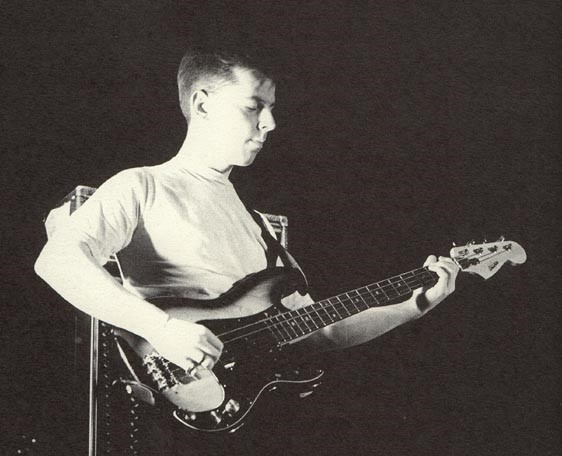

ARTIST
MORRISEY
JOHNEY MARR

ANDY ROURKE
MIKE JOYCE
THE BAND
The Smiths were an English rock band formed in Manchester in 1982, composed of Morrissey (vocals), Johnny Marr (guitar), Andy Rourke (bass) and Mike Joyce (drums). Morrissey and Marr formed the band’s songwriting partnership. The Smiths are regarded as one of the most important acts to emerge from 1980s British independent music.
Craig built up a series of music tours over the years to reflect the popularity of some of Manchester’s most celebrated music exports and celebrate the creativity that has come from our city. Tours across Greater Manchester include The Smiths, Oasis, The Stone Roses and Joy Division/New Order and they continue and evolve to honour his legacy to Manchester music.
The Smiths signed to the independent label Rough Trade Records in 1983 and released their debut album, The Smiths, in 1984. Their focus on a guitar, bass and drum sound, fusing 1960s rock and post-punk, was a rejection of the synth-pop sound predominant at the time. Several Smiths singles reached the top 20 of the UK Singles Chart, and all their studio albums reached the top five of the UK Albums Chart, including the number-one album Meat Is Murder (1985). The band achieved mainstream success in Europe with The Queen Is Dead (1986) and Strangeways, Here We Come (1987), which both entered the top 20 of the European Albums Chart.[6] In 1986, the band briefly became a five-piece with the addition of guitarist Craig Gannon
CHARTBUSTERS
- “The Queen Is Dead”
- “How Soon Is Now?”
- “Bigmouth Strikes Again”
- “Handsome Devil”
- “Half a Person”
- “William, It Was Really Nothing”